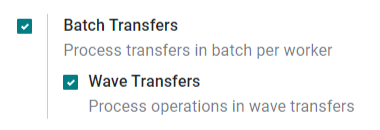
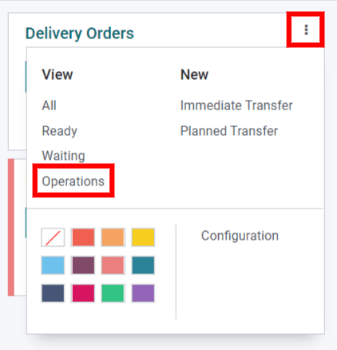
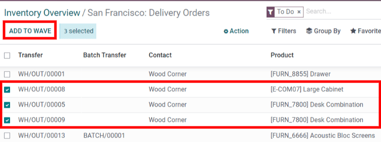

Process wave transfers¶
While a batch transfer is a group of several pickings, a wave transfer only contains some parts of different pickings. Both methods are used to pick orders in a warehouse, and depending on the situation, one method may be a better fit than the other.
To handle orders of a specific product category, or fetch products that are at the same location, wave transfers are the ideal method.
In Odoo, wave transfers are actually batch transfers with an extra step: transfers are split before being grouped in a batch.
Configuration¶
Before a wave transfer can be created, the Batch Transfers and Wave Transfers options must be activated.
First, go to . In the Operations section, enable Batch Transfers and Wave Transfers. Then, click Save to apply the settings.
Add products to a wave¶
Now that the settings are activated, start a wave transfer by adding products to a wave.
Wave transfers can only contain product lines from transfers of the same operation type. To view all the transfers and product lines in a specific operation, first go to the Inventory dashboard and locate the desired operation type’s card. Then, open the options menu (the three dots icon in the corner of the operation type’s card) and click Operations.
On the operations page, select the product lines you want to add in a new or existing wave. Then, click Add to Wave.
Tip
Use the Filters in the search bar to group lines with the same product, location, carrier, etc…
After that, a pop-up box appears.
To add the selected lines to an existing wave transfer, select the an existing wave transfer option and select the existing wave transfer from the drop-down menu.
To create a new wave transfer, select the a new wave transfer option. If creating a new wave transfer, an employee can also be set in the optional Responsible field. Once the desired options are selected, click Confirm to add the product lines to a wave.
View wave transfers¶
To view all wave transfers and their statuses, go to . Wave transfers can also be viewed in the Barcode app by going to .